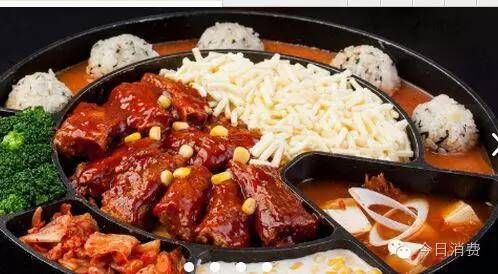

Written by Super man
2 comments

Inthe total, Chinese food culture has gained much popularity throughout the world, and in the modern era, the popularity still thrives. Food culture, which has great influence to Chinese people’s personalities, has already become one of the fine traditional cultures in China. With the enhancement of the globalization, Chinese food culture would become better known across the world....
Readmore...
Written by
Super man
0 comments
We have roughly separated Chinese cuisine into two genres. They are Cuisines of the north part and the southern part. Cuisines of the southern part of China are really featured. They have various differences with northern cuisine.
Readmore...